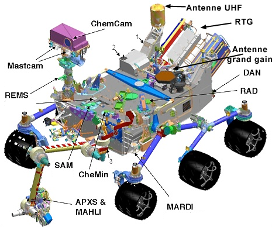

Le Rover Curiosity
Détails:
| Operateur | NASA |
|---|---|
| Mission | MSL |
| Fabricant | JPL Boeing Lockheed Martin |
| Masse | 899 kg |
| Identifiant COSPAR | 2011-070A |
Spécifications:
Le rover Curiosity est la composante principale de la mission Mars Science Laboratory.Il a une masse de 899kg, mesure 2.9m x 2.7m, et est 2.2m de haut.
Le rover est alimenté par un generateur thermoélectrique à radioisotope, plus deux batteries rechargeables de 42 ampère-heure.
Les deux ordinateurs sur le rover sont résistants à la radiation, et un des deux sert d'ordinateur de secours.
Pour la mission, le rover embarque 10 instruments scientifiques.

| Acronyme | Nom complet de l'instrument | Description |
|---|---|---|
| MAHLI | Mars Hand Lens Imager | Microscope permettant de caractériser la composition et la microstructure des roches. |
| MASTCAM | Mast Camera | Deux caméras permettant de fournir des images en couleurs et en infrarouge. |
| MARDI | Mars Descent Imager | Une camera permettant de cartographier le site d'atterrissage. |
| CHEMCAM | Chemistry Camera | Spectromètre qui analyse à distance la nature et la composition des roches. |
| APXS | Alpha-Particle X-ray Spectrometer | Spectromètre à rayon X. Mesure l'abondance des éléments lourds dans le sol. |
| CheMin | Chemistry and Mineralogy | Instrument analysant les roches par diffraction et fluorescence des rayons X. |
| SAM | Sample Analysis at Mars | Mini laboratoire qui contribue à déterminer l'habilité présente et passéee de Mars. |
| RAD | Radiation Assessment Detector | Détermine la composition du rayonnement de surface sur Mars. |
| DAN | Dynamic of Albedo Neutrons | Détecteur qui mesure l'hydrogène présent sur le sol martien. |
| REMS | Rover Environmental Monitoring Station | Station météorologique. |